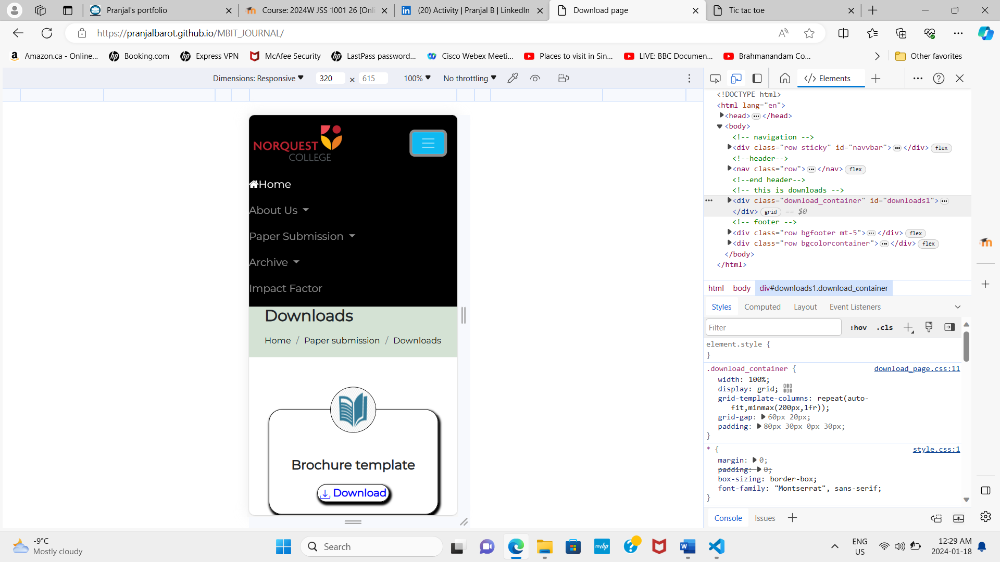
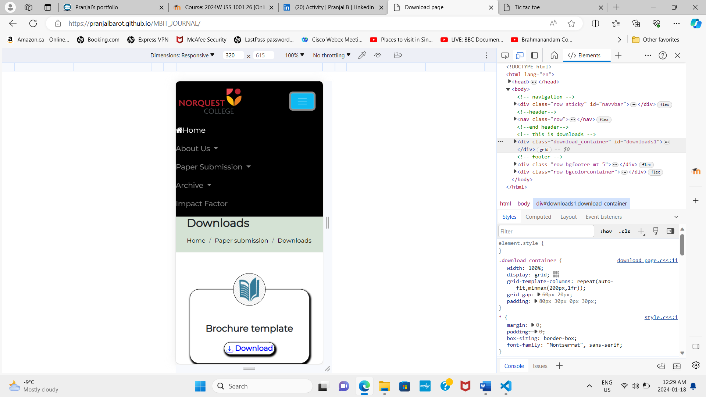

Creating a college journal using HTML, CSS, JavaScript, and Bootstrap involves designing a simple web application where users can add, edit, and delete journal entries. Below is a high-level overview of the necessary components and their functionalities:
HTML Structure:
Created an HTML file with the necessary structure for the journal application.
Included Bootstrap for styling and responsiveness.
Designed a layout with a navigation bar, a section for displaying journal entries, and a form for adding new entries.
CSS Styling:
Applied styles to enhance the visual appeal of your college journal application.
Utilized Bootstrap classes for styling elements like buttons, forms, and navigation.
JavaScript for Interaction:
Implemented JavaScript to handle user interactions and dynamically update the content of the journal.
Created functions to add, edit, and delete journal entries.
Used JavaScript to interact with the Document Object Model (DOM) for updating the UI.
Bootstrap Components:
Integrated Bootstrap components such as forms, modals, and buttons to enhance the user interface.
Utilized Bootstrap grid system for creating a responsive layout.
LocalStorage for Data Persistence (Optional):
Used localStorage or sessionStorage to persist journal entries locally on the user's device.
This allows users to retain their journal entries even after refreshing the page.
Navigation Bar:
Included a navigation bar with links to different sections of the journal, such as "Home," "Add Entry," and "Edit Entry."
Displaying Journal Entries:
Retrieved journal entries from local storage or another data source and display them on the page.
Used Bootstrap cards or other components to present each journal entry in an organized manner.
Add Entry Form:
Designed a form for users to add new journal entries.
Validated the form inputs using JavaScript if necessary.
On form submission, add the new entry to the display and store it in localStorage.
Edit Entry Feature:
Implemented functionality to edit existing journal entries.
Used modals or a separate form for editing entries.
Updated the entry in the display and localStorage upon editing.
Delete Entry Feature:
Add a delete button or icon to each journal entry for removing entries.
Implemented a confirmation dialog or modal before deleting an entry.